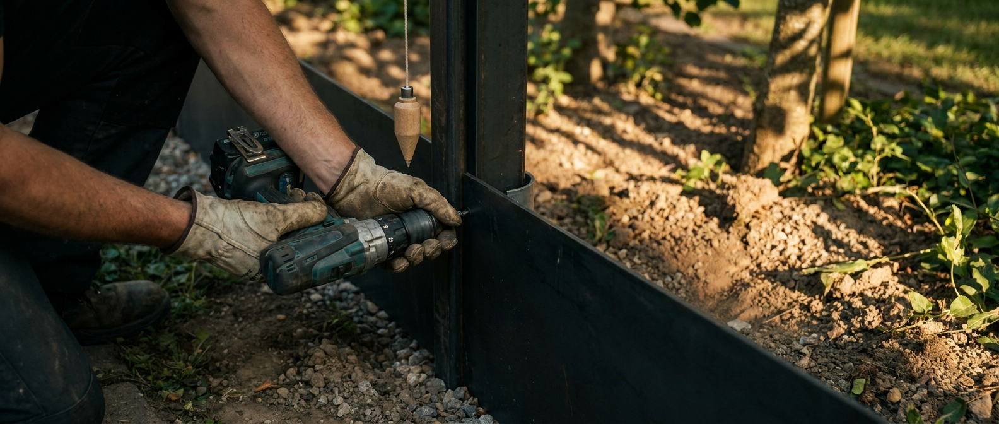
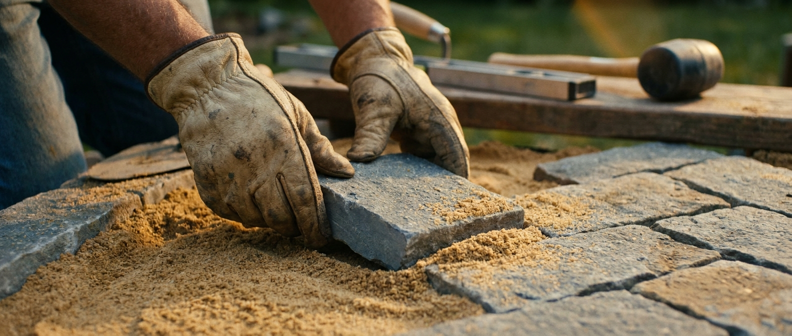
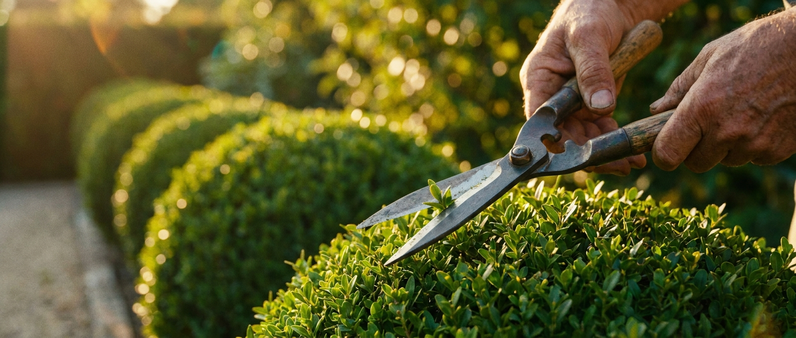

Vier fases op één werf
Uitgraven, uitvlakken, uitplanten, uitrijden.
Een werf verloopt in vier logische fases, nooit door elkaar. Van eerste schop in de grond tot laatste veegborstel op de oprit — altijd in deze volgorde, met dezelfde vier mensen.

Uitzetten, uitgraven, fundering en dragende constructies.

Terras, paden, trappen, hekken — alles droog en waterpas.

Vaste planten, bomen, klimop op draad, gazon of natuurlijke graslanden.

Afgeveegd, uitgeruimd, materiaal weg. Overhandiging ter plaatse.
Foto's van lopende werven — gemiddeld 4 tot 10 weken doorlooptijd.
Bekijk afgeronde werven →